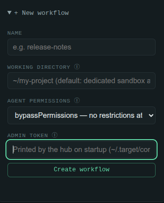
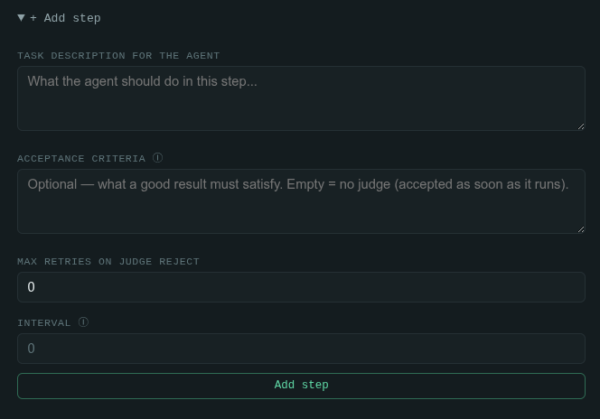
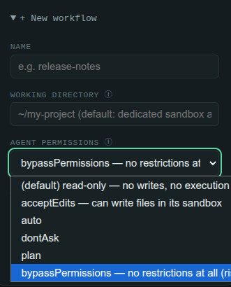

A local hub for defining workflows made of N sequential
steps executed by Claude. It reuses agentmesh's mechanism
(agent = agent-webhook-bridge hook, step = asynchronous job with a
callback) but each workflow creates its own dedicated agent + hook, and its steps
run one after another on the same Claude session
(--resume chained) — a single conversation that advances step by step.
target is a local hub for defining workflows made of N sequential steps executed by Claude. Instead of a registry of shared, reusable agents with a queue of loose jobs (the agentmesh model), each workflow creates its own dedicated agent + awb hook when it's created, and its steps are dispatched one at a time, always chained onto the previous Claude session, so the whole workflow reads as one continuous conversation rather than N unrelated jobs.
The hub exposes an HTTP API, a single-page web UI and a target CLI. For
every workflow it also keeps a progress .md file under
~/.target/, rewritten on every state change.
| agentmesh | target |
|---|---|
| Agent = reusable row in a registry | Agent = 1 per workflow, created automatically when the workflow is created |
| Job = loose task, optional session | Step = task of a workflow, always chained to the previous session |
| Parallel jobs, no order | Strictly sequential steps — the next one doesn't fire until the previous one finishes |
| — | Progress in % (done/total), pause/resume, edit a step + restart the workflow |
| — | Every step's input appends an instruction to resolve itself with a subagent (Task tool), since the main thread is reused for the whole workflow |
| — | Status .md in ~/.target/<name-slug>-<id>.md, rewritten on every change |
Stack: Node.js ≥ 24, TypeScript run directly by Node (no build step), and
zero runtime dependencies — node:sqlite (WAL mode) for
persistence, node:http for the hand-written server, node:crypto
for tokens, and the global fetch to talk to the broker. The only
dependencies at all are dev-only: typescript and @types/node.
The UI is a single static hub/ui/index.html served by the hub itself, no
framework or bundler.
.nvmrc). The hub runs its .ts files directly via node:sqlite and Node's built-in TypeScript stripping — no build step.claude -p / claude --resume for each step.PATH (used to clone/update the vendored awb checkout).Not published to npm: it's used straight from the repo checkout.
git clone <this repo> && cd target
npm run target:install
target:install runs scripts/bootstrap.mjs, which is
deliberately plain JavaScript (every other script in the repo is TypeScript run
directly by Node, but that only works from Node 23.6 on): it checks the running
Node's version and, if it's older than 24, activates a suitable one via
nvm or fnm (installing it first if needed) before handing
off to scripts/install.ts, which does the real work:
hub/'s dependencies (npm ci, falling back to npm install if the lockfile is out of sync).vendor/agent-webhook-bridge (gitignored), or fast-forwards it if it's already there.The whole thing is idempotent — safe to re-run any time, and each step skips work that's already done (a lockfile hash is stamped in node_modules/.target-install-stamp so unchanged dependencies aren't reinstalled).
Set AWB_DIR=/path/to/existing/clone before running the installer (or
npm start) to reuse an existing agent-webhook-bridge checkout instead
of vendoring a second copy.
npm start
Runs scripts/start.ts, which brings up both processes —
the awb broker (default 127.0.0.1:8890) and the target hub (default
127.0.0.1:8893) — polls both ports until they actually answer, opens the
UI in your default browser, then holds the foreground with both children attached.
Ctrl-C (or SIGTERM) tears both down cleanly. If either
port is already answering (broker or hub started some other way), that one is reused
instead of fought over.
To run just the hub (assuming awb is already running separately):
cd hub && node daemon.ts
# or: node hub/cli.ts start
State lives in ~/.target/: config.json (host, port,
admin token, step timeout, max input size), target.db (SQLite:
workflows + steps), a sandbox dir per agent
(sandboxes/<agent>/) and a <slug>-<id>.md
progress file per workflow. Set TARGET_HOME=/your/path before any
command to use a different location (tests, multiple instances).
The admin token is generated on first run and written into
config.json; it's printed to the console every time the hub starts.
The web UI asks for it once and remembers it; the target CLI reads it
straight from the config file, so there's nothing to type locally.
A workflow is created with a name and, behind the scenes, an awb hook +
dedicated agent are created for it automatically (hub/awb.ts writes the
hook into ~/.agent-webhook-bridge/hooks.json, which the broker re-reads
per request — no restart needed). Steps are appended afterwards, then dispatch is
started.
node hub/cli.ts create "release-notes" [--workdir <dir>] [--permission-mode acceptEdits]
node hub/cli.ts add-step <workflowId> "Read the CHANGELOG and put together a summary"
node hub/cli.ts add-step <workflowId> "Publish the summary to docs/release-notes.md"
node hub/cli.ts run <workflowId> # start / continue
Or from the UI at http://127.0.0.1:8893 (the Workflow section):
create a workflow, add steps with the + Add step button, watch the
progress bar, Start/Pause/Resume/Restart, and edit a pending step before restarting.


By default a workflow's agent can answer but cannot write files or
run commands — the same conservative default as agentmesh phase 1. To let steps
actually write files in their dedicated sandbox
(~/.target/sandboxes/<agent>/), create the workflow with
--permission-mode acceptEdits (or pick it in the UI form).
bypassPermissions also exists but enables unrestricted command
execution on the operator's machine, so it requires an explicit
--yes-bypass-risk flag on the CLI (acceptBypassRisk: true
in the API body) — it can't be enabled by accident.

Unlike a job queue, a workflow's steps are strictly sequential: the next step
doesn't fire until the previous one is done, and each dispatch resumes
the same Claude sessionId as the last one (claude --resume
under the hood), so the agent keeps the full context of everything the workflow has
done so far.
Because the session is reused turn after turn, each step's input appends an explicit instruction to do the work with the Task tool (a subagent) instead of inline. That keeps each step's working context out of the resumed session, which only accumulates the subagent's final summaries instead of every intermediate tool call.
Any step can also be run out of order, via POST /api/workflows/:id/steps/:stepId/run
or the ▶ button in the UI. That run uses the same agent/hook but always
starts a fresh session — it never resumes and never becomes the workflow's
new lastSessionId. It stays outside the sequential engine and doesn't
touch the workflow's status directly; instead, the workflow's status is
reconciled from the current state of its steps (all done
→ completed, any failed → failed, something
left to run → draft) — which is what lets retrying a single failed step
until it passes take the whole workflow back out of failed.
Every step has a selected flag (on by default). Start, Resume and
Restart all accept an optional list of step ids in the request body
({"stepIds": [...]}) to run only that subset — the UI exposes this as a
checkbox per step. An empty/omitted selection deselects every step for that call, so
nothing is dispatched until at least one step is selected again.
A step can optionally carry an acceptance criterion. If it has one,
finishing the step's execution (the exec phase) doesn't mark it
done: the step enters a judge phase and a second run is
dispatched, on the same session, asking the agent to evaluate its own result and
answer a JSON verdict — {"ok": bool, "reason": string}.
done and the engine advances to the next step.maxRetries is exhausted, and only then does the workflow fail.
Steps also carry retryCount and an optional
retryIntervalSeconds (a wait before the next retry attempt), both
settable when a step is created or edited.
Like agentmesh, the flow is asynchronous end to end: the hook answers
{"ok":true} immediately (meaning only "accepted"), and the hub marks the
step running on acceptance. The real result arrives later on
POST /api/steps/:id/result, authenticated with a per-step token compared
with crypto.timingSafeEqual.
127.0.0.1 — nothing listens on the network directly./api route (create/edit/delete workflows and steps, start/pause/resume/restart, on-demand run) requires the admin token as a Bearer header, checked with a timing-safe comparison.POST /api/steps/:id/result) is authenticated instead with a random per-step token passed as ?token=, never the admin token.--permission-mode acceptEdits at creation, scoped to that agent's own sandbox (~/.target/sandboxes/<agent>/), never a real repo.bypassPermissions disables every permission check (arbitrary Bash, git, network) for that workflow's steps. It demands an explicit acceptBypassRisk: true (--yes-bypass-risk on the CLI) — it can't be turned on by accident.| What happened | How the step ends |
|---|---|
The step's still pending/running longer than the step timeout | failed with a timeout error, once anything reads the workflow/step list. |
| The judge's verdict rejects the result | Retried on the same step, with feedback, until maxRetries is exhausted — then the workflow fails. |
| The judge's verdict doesn't parse as JSON | The workflow fails immediately (deliberately, rather than guessing at the intended verdict). |
| awb's result callback reports a non-zero exit | failed, with the reported error/exit code. |
Expiry is lazy — implemented in db.ts/workflow.ts's
expireStale: any read of the workflow list or a workflow's detail first
fails any running step older than stepTimeoutMs, so timeouts
are enforced without a timer and survive hub restarts for free. A callback that
arrives after the timeout does not resurrect the step.
Persisted at ~/.target/config.json (override the directory with
TARGET_HOME), read by hub/config.ts. Created with defaults on
first run; the admin token is generated once and then kept.
| Field | Default | Meaning |
|---|---|---|
host | 127.0.0.1 | Bind address for the hub's HTTP server. |
port | 8893 | Chosen away from awb's default (8890) and agentmesh-hub's (8892) so all three can share a machine. |
adminToken | random, generated on first load | Bearer token required by every mutating /api route. Printed at hub startup. |
stepTimeoutMs | 600000 (10 minutes) | A step still pending/running longer than this is lazily marked failed. |
maxInputBytes | 65536 (64 KiB) | Request body size cap enforced while reading JSON bodies; oversized bodies get 413. |
The awb broker it depends on is configured separately, under
~/.agent-webhook-bridge/ (or AWB_HOME) — its own port
defaults to 8890 and is read from that install's hooks.json.
| Command | What it does |
|---|---|
npm run target:install | One-command bootstrap: hub dependencies, vendors/updates agent-webhook-bridge, installs its dependencies. Idempotent. |
npm start | Boots the awb broker and the target hub together, waits for both ports, opens the UI, holds the foreground until Ctrl-C. |
npm test | Runs the hub's tests (node --test, from hub/workflow.test.ts) against a throwaway TARGET_HOME. |
npm run typecheck | Type-checks the hub with tsc --noEmit. |
target start | Runs the hub in the foreground (equivalent to node hub/daemon.ts). |
target create <name> [--workdir <dir>] [--permission-mode <mode>] [--yes-bypass-risk] | Creates a workflow — and its dedicated awb hook + agent. Modes: acceptEdits, auto, manual, dontAsk, plan, bypassPermissions (needs --yes-bypass-risk). |
target add-step <workflowId> <description...> | Appends a step to a workflow. |
target list | Lists workflows with their status and progress %. |
target show <workflowId> | Shows a workflow's steps and their status. |
target run <workflowId> | Starts (or continues) sequential dispatch. |
target pause <workflowId> | Stops dispatching further steps. |
target resume <workflowId> | Undoes pause. |
target restart <workflowId> | Resets every step to pending (dropping session chaining) and starts over. |
If target isn't linked globally, every command above works the same as
node hub/cli.ts … run from the repo root.
| Endpoint | What it does |
|---|---|
GET /health | Liveness + workflow count. |
GET /api/workflows | List workflows with progress % (also expires stale steps first). |
POST /api/workflows | Create a workflow (admin token) — also creates its awb hook. Body: {name, workdir?, permissionMode?, acceptBypassRisk?}. |
GET /api/workflows/:id | Workflow detail + its steps. |
GET /api/workflows/:id/transcript | The harness + live conversation of the current/most-recently-run session, read from Claude Code's own .jsonl transcript. |
DELETE /api/workflows/:id | Removes a workflow: deletes its awb hook, its .md file and its DB rows (admin token). |
POST /api/workflows/:id/steps | Adds a step (admin token). Body: {description, acceptanceCriteria?, maxRetries?, retryIntervalSeconds?}. |
PATCH /api/workflows/:id/steps/:stepId | Edits a step's description / judge settings (admin token). |
DELETE /api/workflows/:id/steps/:stepId | Removes a pending step (admin token). |
POST /api/workflows/:id/steps/:stepId/run | Runs one step now, outside the sequential order, always on a fresh session (admin token). |
POST /api/workflows/:id/start | Begins/continues sequential dispatch (admin token). Body: {stepIds?: string[]} to restrict which steps run. |
POST /api/workflows/:id/pause | Stops dispatching further steps (admin token). |
POST /api/workflows/:id/resume | Undoes pause (admin token). Same optional stepIds body as start. |
POST /api/workflows/:id/restart | Resets selected steps to pending and starts over (admin token). Same optional stepIds body. |
POST /api/steps/:id/result | awb's result callback, authenticated with the per-step ?token=. Not meant to be called by hand. |
GET / | The web UI. |
At runtime the hub uses ~/.target/: config.json,
target.db, sandboxes/<agent>/ and a
<slug>-<id>.md progress file per workflow. The
agent-webhook-bridge checkout used by npm start lives in
vendor/agent-webhook-bridge (gitignored) unless AWB_DIR
points elsewhere.
The README describes the project as being in its early stages:
GitHub issues track bugs and pending features, and PRs target main. The
repo is small and young, with several comments referring to the current, local-only
setup as "phase 1" and a planned phase 2 for remote nodes that register their own
hooks.
Recent focus, per the project's own history, has been on fine-grained control over individual steps:
manualRun flag reusing the step's normal status/result/error, plus reconcileStatus() deriving the workflow's status from its steps' current state.There is no CI in the repo, and no build step — Node runs the .ts files directly.